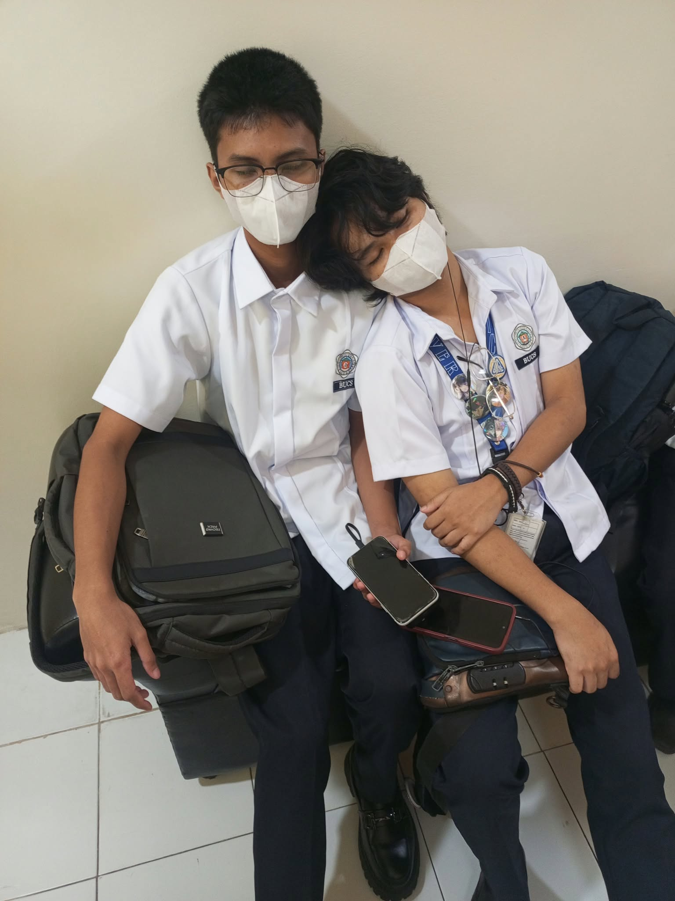
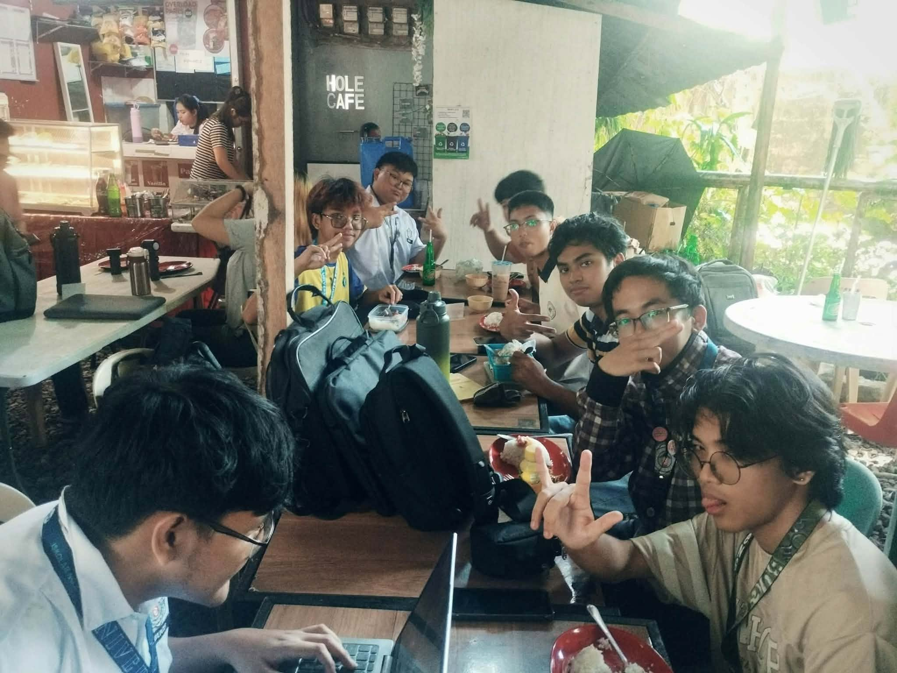
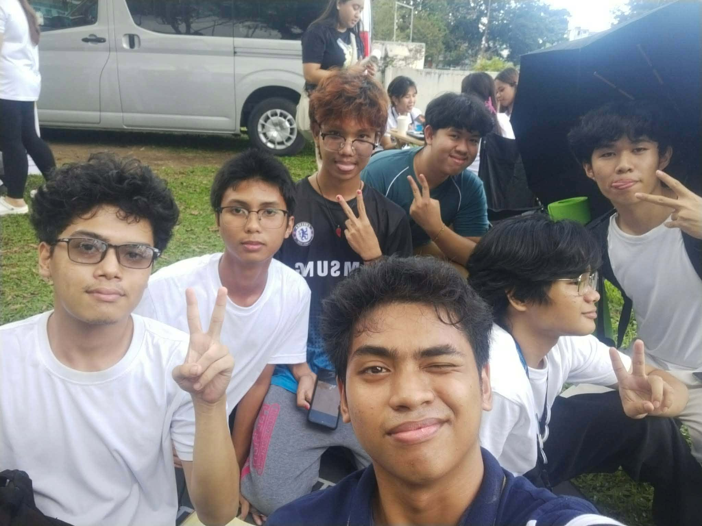

![]()
Let Me Tell You About Myself
Hello! My name is Krizoffer Arciaga. I am a first-year BSCS student at Bicol University. I currently live in Kinawitan, Daraga, Albay. If i had to describe myself in a few words, I would say that I am a lazy, slightly introverted, and lowkey curious type of an individual. I'm also the type of guy who thinks of ways to improve myself, which is a problem since i only do the 'thinking' part;p.
My Path into Computing
I can't really say that I love computing since, by the word itself it seems to relate to math, a subject I have mix feelings about. I mean sometimes it's a pain to deal with, but at the same time, I find it entertaining and fun. Moving on, I do have an addiction to computers since I was a kid, perhaps due to having access to a net cafe back then. I would spend hours playing games and exploring the internet, I'd even sneak in the office to steal the password when they decided to change it. Basically, you can say that I have a love-hate relationship with computing, but I do enjoy using it for entertainment and nowadays, I surprisingly find it fulfilling, the feeling of knowing the reason why a program works and it's evergrowing connections to a lot of stuff. I chose to pursue this course because aside from money, I am hoping to create new projects such as games and applications that can enhance the convenience we are already enjoying in our daily lives.
Hobbies/Passions
- Reading Novels and Comics
- Playing Online Games
- Watching Movies and Series
As mentioned above, I am fond of reading novels and comics, which is my main hobby. I also enjoy playing online games, especially Multiplayer Games, as it allows me to connect with friends and meet new people. Additionally, I like watching movies and series, which helps me relax and unwind after a long day. To be honest, I am a very lazy person and am easily addicted to things that interest me, so I usually spend my free time doing these activities(even if it's not my free time i still spend it the same). And that's my typical day for you.
My Goals
My short-term goal is to survive my first year in college, I don't really have any grand ambition, I just wish to be sane afterwards and hopefully i won't haev to switch courses(not that I'd love to:P). Kidding aside, I feel like I need to lock-in, learn more about programming and strive to accomplish a major project by 3rd year. On the otherhand, my long-term goal is to be capable of using my knowledge learned in college to find a high-paying job and achieve financial freedom to live in comfort till the day i fly away.
My Favorites
| Websites/Applications | WHY I Like It |
|---|---|
| WebNovel | It has a wide variety of novels and comics to read, and it allows me to explore different genres and discover new stories. |
| Netflix | It has a vast collection of movies and series, and it allows me to watch my favorite shows anytime, anywhere. |
| Steam | It has a wide selection of games, and it allows me to connect with friends and play multiplayer games online. |
My Gallery






Reflection
I am genuinely surprised and amazed. I never thought that doing this activity would make me so immersed to the point of no-eating and not even knowing how much time had passed. I was amazed because I didn't expect myself to be so hooked into this project that I'm starting to think that I might actually be a workaholic. It was so fun! It's been a while for me to be so focused on a 'chore', it's usually so limited to entertainment purposes. I'm glad since, I think I've found my calling, I just hope these coming years won't change this mindset HAHA. Moving on, It's hard. I learned a lot of things, especially the effects I can apply to links, texts, and images. Through my research about different html and css elements and properties, I was able to make use of div, tabs, clever uses of buttons, and a lot more. I also learned how to combine and organize my ideas properly and learn quite a bit of webdesign. These are just some of the changes I improved and made on the previous version of my webpage. This is one of the most fulfilling individual projects that I've done and did not complain about. I am expecting to do more of these in the future.